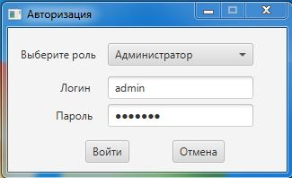
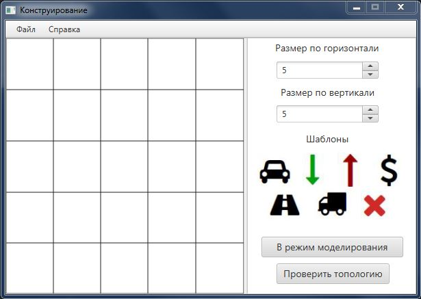
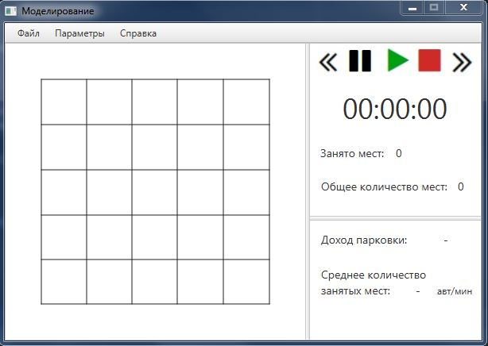

Авторизация

Здесь есть 2 варианта: войти как администратор (тогда следует узнать пароль у начальства), чтобы начать работу над конструированием парковки, а именно
растановки шаблонов подобно модели реальной парковки. Или же войти как пользователь, чтобы в режиме реального времени отслеживать модель работы парковки
(в этом случае пароль не требуется).
Конструирование

В конструировании вы можете создать макет вашей парковки. Для этого вы можете добавлять шаблоны такие как: парковочное место легкогого автомобиля,
въезд на парковку, выезд с парковки, касса, проезжая часть, парковочное место для грузового автомобиля(оно занимает 2 клетки). Чтобы добавить какой-либо шаблон
вам необходимо нажать на шаблон, а после на клетку в поле слева. Над шаблонами располагаются 2 счётчика, которые можно прибавить - расшириф тем самым
поле для парковки. Также вы можете удалять шаблоны с поля, для этого нужно нажать на красный крест рядом с шаблонами, и далее кликнуть на шаблон, уже установленный
на парковке (поле). Ещё при работе с шаблонами вы можете их перемещать - для этого необходимо нажать правой кнопкой мыши (ПКН) на шаблон, установленный на поле,
и после нажать левой кнопкой мыши на другую ячейку поля, куда и перенесётся шаблон.
После расстановки шаблонов вы можете проверить топологию (то есть построение) парковки на корректность, и, если топология корректна, то её можно будет сохранить.
Так же есть возможность загрузить уже готовую топологию для редактирования и просто перейти в режим моделирования. А ещё можно по выезжающему списку Справка узнать информацию о системе и разработчиках
Моделирование

Чтобы начать работу модели парковки нужно только загрузить корректную топологию и нажать на треугольник "Старт". Также имеются кнопки пауза, стоп, ускорение
и замедление течения времени. Из особенностей вам выводится под кнопками небольшая сводка статистик: сколько занято мест, общее количество мест;
а также доход парковки за день и среднее количество занятых мест за день.
|